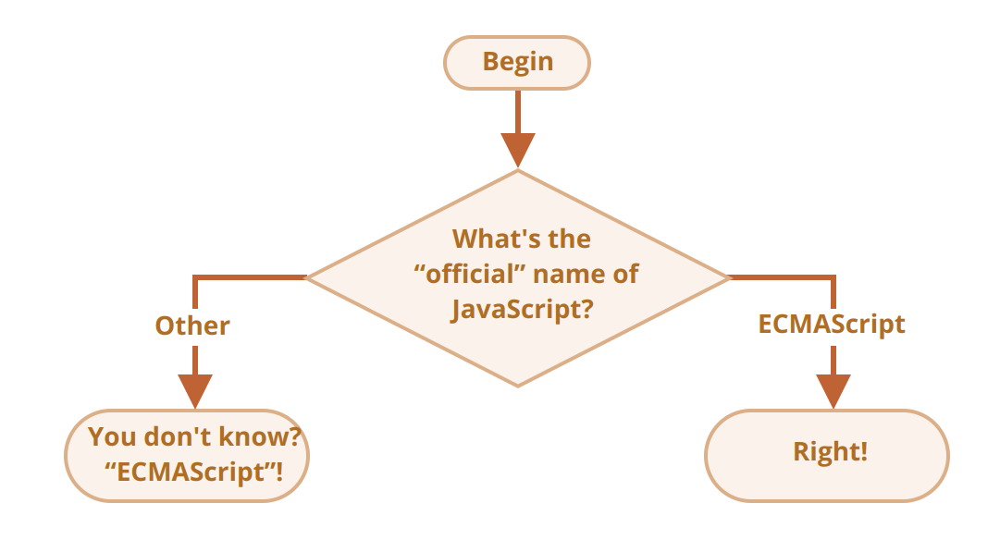

https://javascript.info/ifelse
if (a string with zero)
- Will alert be shown?
if ("0") {
alert( 'Hello' );
}
The name of JavaScript
- Using the if..else construct, write the code which asks: ‘What is the “official” name of JavaScript?’
- If the visitor enters “ECMAScript”, then output “Right!”, otherwise – output: “You don’t know? ECMAScript!”
- 
Show the sign
- Using if..else, write the code which gets a number via prompt and then shows in alert:
- 1, if the value is greater than zero,
- -1, if less than zero,
- 0, if equals zero.
- In this task we assume that the input is always a number.
Rewrite 'if' into '?'
- Rewrite this if using the conditional operator '?':
let result;
if (a + b < 4) {
result = 'Below';
} else {
result = 'Over'; }
Rewrite 'if..else' into '?'
- Rewrite if..else using multiple ternary operators '?'.
- For readability, it’s recommended to split the code into multiple lines.
let message;
if (login == 'Employee') {
message = 'Hello';
} else if (login == 'Director') {
message = 'Greetings';
} else if (login == '') {
message = 'No login';
} else {
message = '';
}